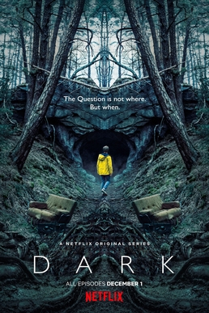
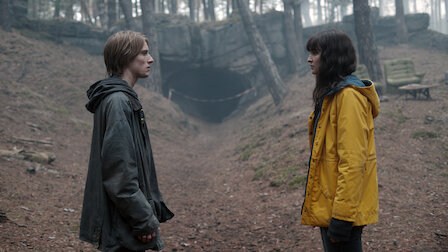

Dark
Director: Baran bo Odar, Jantje Friese
Genre:Science fiction, Thriller, Mystery, Tragedy
My Opinion:
"Everything is connected and that's it.
Mind blowing"
Dark is a German science fiction thriller television series co-created by Baran bo Odar and Jantje Friese. It ran for three seasons from 2017 to 2020. The story follows characters from the fictional town of Winden, Germany, as they pursue the truth in the aftermath of a child's disappearance. They follow connections between four estranged families to unravel a sinister time travel conspiracy that spans several generations. The series explores the existential implications of time and its effect on human nature and life. It features an ensemble cast.
Dark was praised for its cast, direction, writing, tone, visuals, musical score, and the ambition and complexity of its narrative. In 2021, the BBC ranked the series as the 58th greatest TV series of the 21st century.
Plot
When two children go missing in a small German town, its sinful past is exposed along with the double lives and fractured relationships that exist among four families as they search for the kids. The mystery-drama series introduces an intricate puzzle filled with twists that includes a web of curious.
Scenes from the film - Spoilers!
- 
-

-